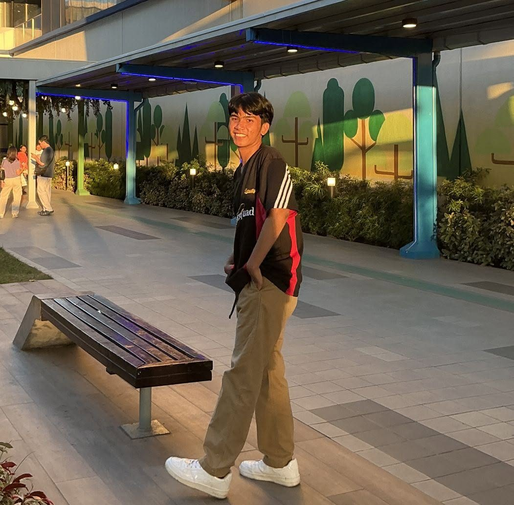
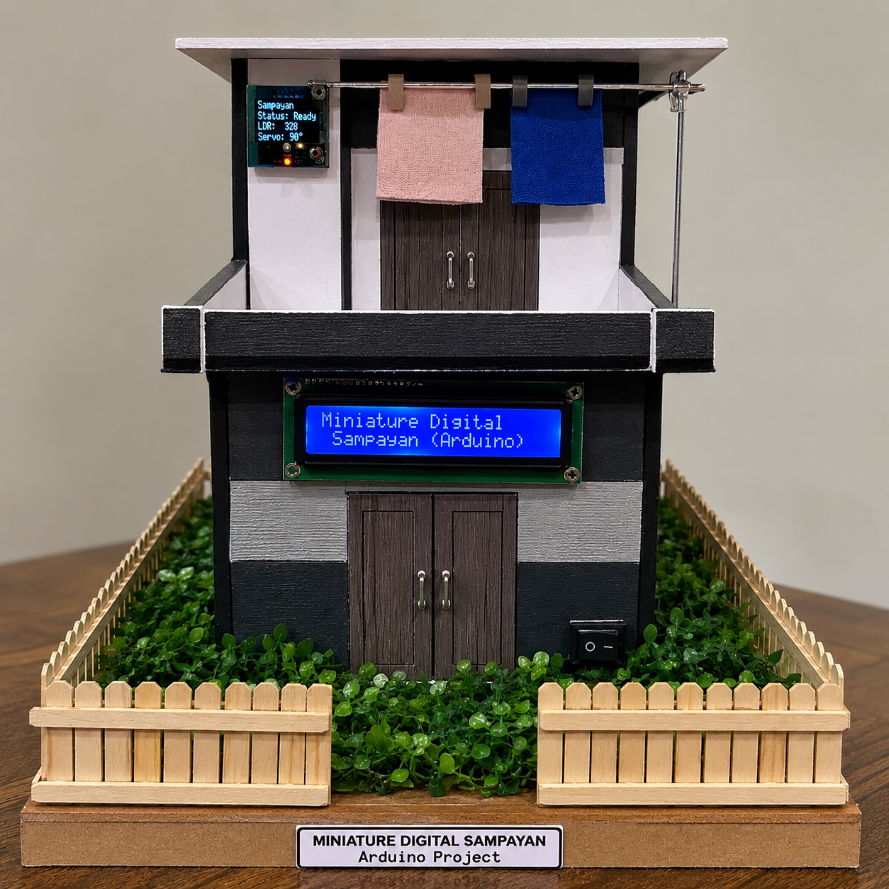
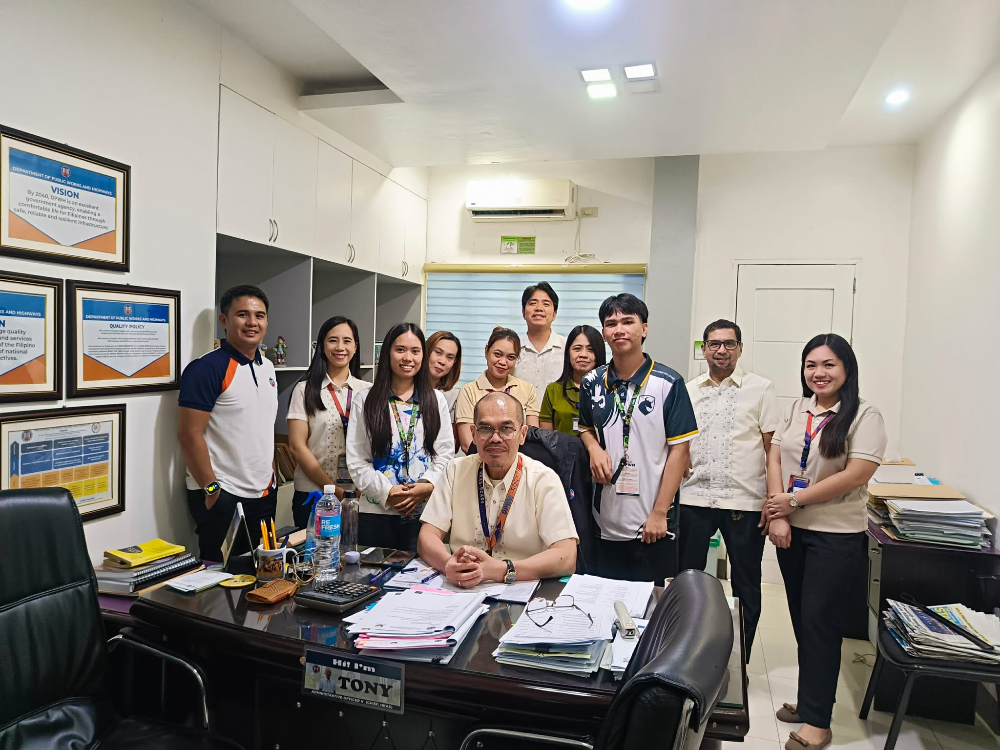
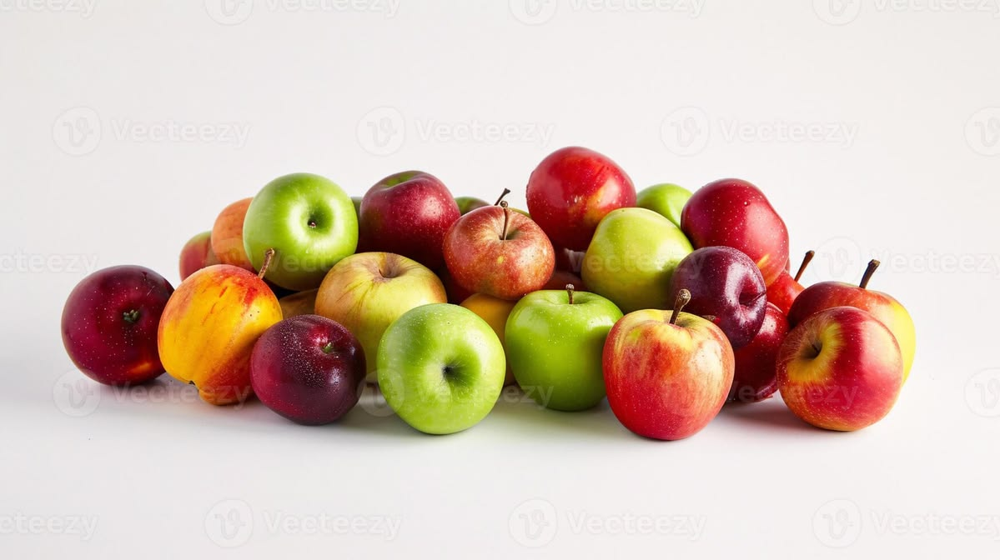
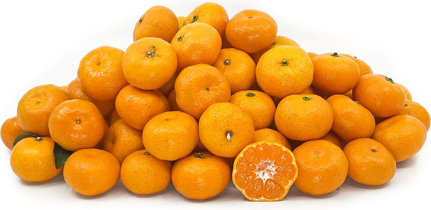
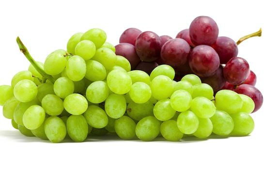
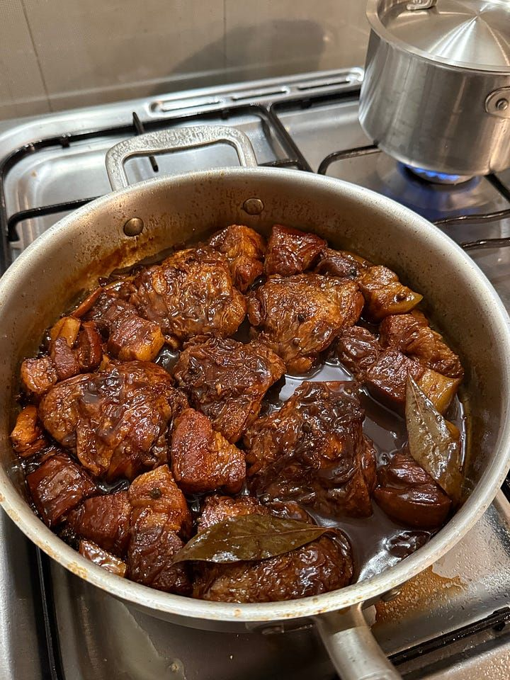
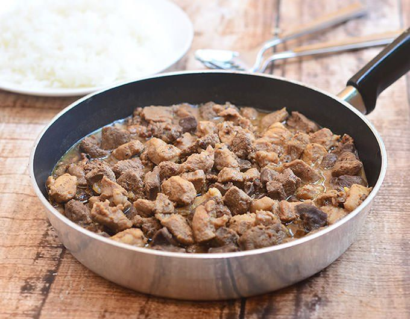
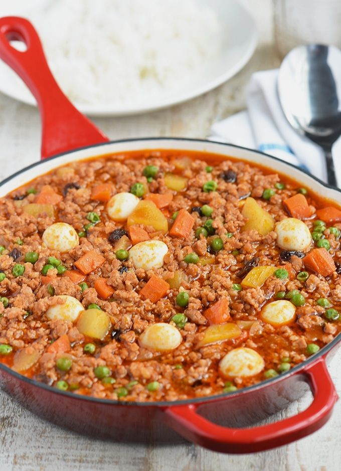

Lawrensvic M. Arangel
Computer Science Student
Age: 20 years old
From: Cardona, Gerona, Tarlac
School: St. Rose College Educational Foundation, Inc.
Campus: Samput, Paniqui, Tarlac
PERSONAL PORTFOLIO
Welcome to my personal website — a collection of my profile, interests, favorite things, dream destinations, and social links.

01 • GET TO KNOW ME
Computer Science Student
Age: 20 years old
From: Cardona, Gerona, Tarlac
School: St. Rose College Educational Foundation, Inc.
Campus: Samput, Paniqui, Tarlac
Hello! My name is Lawrensvic M. Arangel. I am from Cardona, Gerona, Tarlac, and I am a Computer Science student at St. Rose College in Samput, Paniqui, Tarlac.
I am interested in technology, programming, web development, and building systems that can make everyday tasks more organized and convenient.
My goal is to continue improving my programming and full-stack web development skills, gain practical software-development experience, and create useful, reliable, and user-friendly systems.
02 • WHAT I ENJOY
Playing badminton is one of my favorite active pastimes.
I enjoy playing volleyball and spending time in an active setting back when I was a kid.
Playing mobile games is one of my favorite ways to relax and become more stress.
Watching K-Dramas is another activity I enjoy during free time and whille there is no class the next day.
Rest and recharge are important parts of a good day.
03 • SKILLS
04 • ACTIVITIES
These are the activities that I have done so far recently in my College life, together with my groupmates/classmates/friends.
 01
01WEB SYSTEM
A web-based attendance system for QR scanning, student records, time-in/time-out tracking, subject schedules, and attendance monitoring.
 02
02ACADEMIC SYSTEM
A proposed integrated school platform for organizing student profiles, grades, and announcements.
GitHub Repository ↗
03ARDUINO PROJECT
An Arduino prototype using a rain sensor and servo motor logic to help protect clothes from rain.
GitHub Repository ↗
04On-The-Job Training
A memorable activity that I experience, going through how the work flows in the real-world settings, meeting new people, and leearning/familiarizing new things.
GitHub Repository ↗05 • A FEW OF MY FAVORITES
NOTE: These things are my Top 3 picks in terms of Foods and Colors.
06 • MY YOUTUBE PLAYLIST
NOTE:These songs are my faves last year, but I'm keeping them here to remember what the "past me" like to listen.
07 • DREAM DESTINATIONS
Entertainment, shopping, fashion, and restaurants in one of Tokyo's popular areas.
A famous Bangkok area known for shopping and cuisine.
A major river in the central region of the Korean Peninsula.
Known for ocean and bay views, history, culture, and food.
NOTE: Hopefully after I graduate and find a decent work, I can travel and vist these places.
08 • LET'S CONNECT
Connect with me through my social-media profiles.
Description
My top three favorite fruits.

Apples are one of my favorite fruits because they are refreshing, easy to eat, and have a naturally sweet and crisp taste.

Oranges are among my favorite fruits because of their juicy texture, refreshing taste, and pleasant citrus flavor.

Grapes are one of my favorite fruits because they are sweet, easy to eat, and enjoyable as a quick snack.
My top three favorite colors.
One of my favorite colors is Olive green because it is appealing and it blends a calming, earthy connection to nature with a sophisticated, grounded neutrality.
Beige Cream is one of my favorite colors because it creates a calm, warm, and inviting feeling without being too loud or busy.
Prussian Blue is one of my favorite colors because of its deeply intense, moody shade that combines the depth of a dark midnight sky with subtle, grounding green undertones.
My top three favorite viands.

Pork & Chicken Adobo is one of my favorite viands because of its savory flavor and the combination of different ingredients.

This is one of my favorite viands because of its distinctive sour flavor and rich combination of pork and liver.

Ground pork is one of my favorite viands because it can be prepared in different ways and has a flavorful and satisfying taste.